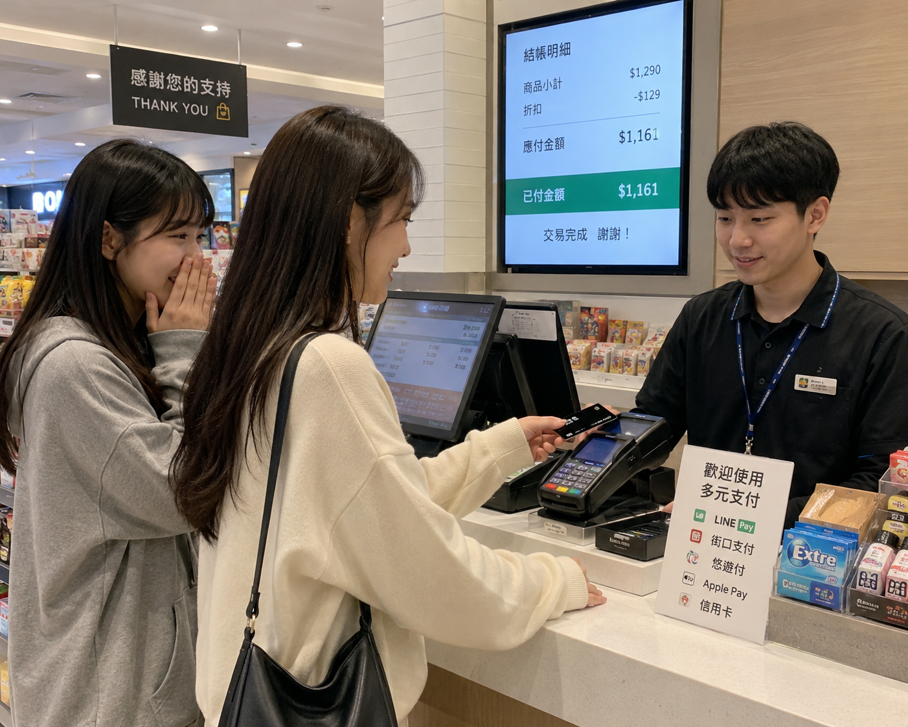

臺灣的打工風氣盛行，工讀若遇上加倍、工時多的情況下，甚至薪資可以與正職相當或更多，但工讀的風險與保障較不穩定，同時也更容易波動。工讀最重要的族群即是剛出社會或是在學的高中生、大學生，為補貼生活或者是增加自身收入，存錢用來實現夢想。
但在權益上，可能會因為你自己是學生、對很多事物都不熟悉，老闆因此私自剝奪權益，甚至會有更糟的狀況，當然遇到好的老闆帶你上天堂的事蹟例外。本章節針對剛出社會或者是找第一份打工的大學生族群進行書寫，依據個人經驗與朋友經驗分享結合，誕生出這章 初級大人 – 打工需知：知己知彼的工作守則。
為什麼都上國定假日班，然後薪水沒有雙倍？老闆跟我說：因為正職是排班制，所以班都很不固定沒有特別的分，該給的錢都會給你的。我整個邏輯死亡，正職排班到底跟工讀有什麼關係啊？
我做的那份餐飲業工作，連勞健保都沒有給付，聽說是因為一直虧損，不去檢視內部的金錢運作情況，卻是拿員工的保險費用來挖東牆補西牆，結果最後那間店倒掉，連自己的薪水都求助無門。
萬事起頭難，在找工作的同時不知道該從何處下手。大部分人都會透過下列四種方式來找尋工作：
| 途徑 | 優點 | 缺點 |
|---|---|---|
| 1.人力銀行 | 取得便利、較快速處理履歷 | 資訊出入不對等、個資疑慮 |
| 2.報紙徵才 | 職業範圍廣、兼職缺額多 | 資訊不完全、遇詐騙機率大 |
| 3.生活看板 | 能實體看見工作環境 | 資訊不完全、可能流向不明 |
| 4.親友引薦 | 快速方便、有人陪有安全感 | 犯錯易傳開、易被打友情牌 |
我們在考慮選擇要從事甚麼職業下，需要先來聊聊大型連鎖與小型連鎖的生態差異：
| 類型 | 優點 | 缺點 |
|---|---|---|
| 大型連鎖 | 保障權益多、制度完善、薪資依法規增減 | 需自費體檢、常客滿較累、有外派支援問題 |
| 小型企業 | 規則較少、容錯率高、環境較輕鬆 | 人員流動率高、保障與勞健保可能較少 |
我自己本身是從人力銀行獲得資訊，並且拿履歷直接到店面詢問；親友也有靠著父母引薦入店裡進行工作，目的與選擇途徑很多，不一定只有單一條線路。大家可以根據自身性格與需求做出最適合的評估。
好不容易挑好想去的店，結果卡在履歷卡半天？聽我一句勸，老闆要的是能馬上上工的即戰力，不是來聽你講古的！ 拜託收起那套「我家有四個人、父母民主慈祥」的幼稚園流水帳，老闆看三秒就想丟垃圾桶。
打工履歷的核心只有三個：時間、態度、穩定度。在自傳裡，你只需要狠狠砸出這三大亮點，你就贏了一半：
重點是誠實但包裝。千萬別說「我很想來學習」，老闆是花錢請人來做事的，不是開補習班的！
順利錄取拿到門票了，結果第一天上班站在店裡像個路障，尷尬到腳趾扣地？別慌，每個人都是這樣過來的。要在最短時間脫離黑名單，關鍵在於「眼色」跟「做筆記」。
進入新環境，你可以複製我總結的快速生存三法則：
在正式找到工作後，可以透過第三部分進行注意事項的參考，透過訪問多位在各行各業打工數年的親友，總結以下經驗：
零售業結帳與貨物盤點的部分雖然沒有很多，但卻非常繁瑣複雜。剛開始做的時候極易被步驟弄混，最好的方式是透過筆記的方式記錄，以及「多問、多看、多聽」，一方面避免結帳少錢要自己貼，另外一方面避免耽誤團隊時間。
另外工作中需要上架與搬運重物，建議穿著輕便、防滑性能良好的鞋子，並時刻注意自身安全與操作規範。
在餐飲業工作，由於需要高頻率端碗盤與熱食，手部甚至其他部分很容易遭受燒燙傷。另外，從事廚房工作（內場）中需要高度注意衛生條件問題，人員與環境乾淨是最基本的責任。
值得心理準備的是：餐飲業也是最容易遇到各類奧客的時候，情緒管理與適時轉達主管協助非常重要。
製造業多粗活體力工作，例如電子晶片測試等，加工前的元件尖角非常鋒利，因此務必全程戴上防護手套才能進行作業。重複性動作極多，容易產生職業肌肉勞損 or 手部受傷，需格外小心。
工地工作一般來說，對於在學學生是極不建議從事的工作。環境中充滿高處墜落、物體飛落或機械誤擊等不可預期的職業災害風險。若因環境使然必須從事，務必嚴格配戴安全帽、防滑防砸安全鞋，並有權利拒絕疲勞駕駛與危險的高空作業！

依據勞動法規，正職離職通常須提前一個月提出，工讀雖無嚴格硬性規定，但提早兩個禮拜提出是基本的職場禮儀。為何需要提前預告？主要是讓雇主有緩衝時間找到替代人員，維持店鋪與團隊的正常營運。
若因為突發不告而別導致雇主產生實質權益虧損，雇主是有權向你合法求償的。因此我們在保護自身權益的同時，也還是要留個體面。但若遇到極端惡劣、忍無全忍的剝削環境，也應當機立斷尋求外外援並依法離開，切勿委曲求全。
我們在權益保障上，往往都是意外發生的時候可以接住你的一環。以下為勞保與健保的核心區分：
勞保（勞工保險）：每個月依法從薪資區間扣除相對應的保費。當你在工作期間受傷、通勤發生意外或有重大職災時，可以申請一筆給付金支撐生活所需。
工讀生無論工時多短，只要到職當天，雇主就必須強制為你投保勞保，這是法定的強制義務，絕對不能妥協！
健保（健康保險）：學生大多依附於父母親。如果你只是短暫工讀，請勿隨意把父母那方的依附健保退掉，否則屆時斷保再度復保時，會產生繁瑣的追繳額外費用。
五月稅務驚魂（扣繳憑單）：我們的薪資所得會在每年的五月報稅時一覽無遺，每年二月起可開放下載扣繳憑單。有些無良雇主會違法虛報、多報你的薪水！
雇主這麼做是為了虛報公司薪資支出，來減少公司自身的所得稅，卻會導致你莫名其妙面臨高額稅金。因此，每年務必親自上網核對自己的薪資所得總額是否有錯誤，以防自己變成冤大頭。
學會獨立，也學會好好照顧自己。
打工權益守則 篇 • 完結
© 2026 初級大人指南項目組